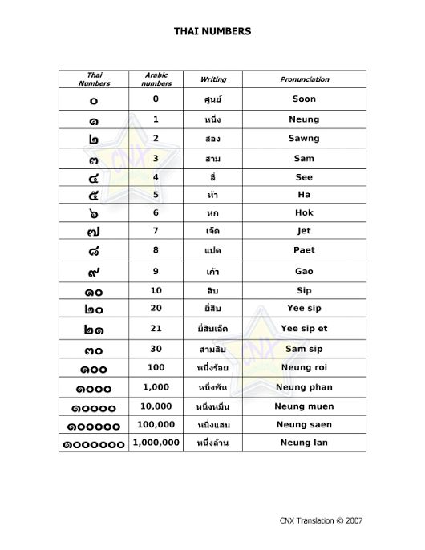

Thai numerals (Thai: เลขไทย, IPA: lêːk̚ tʰaj) are a set of numerals traditionally used in Thailand, although the Arabic numerals are more common due to pervasive westernization of Thailand in the modern Rattanakosin Era. Thai numerals follow the Hindu-Arabic numeral system commonly used in the rest of the world. In Thai language, numerals often follow the modified noun and precede a measure word, although variations to this pattern occur.

